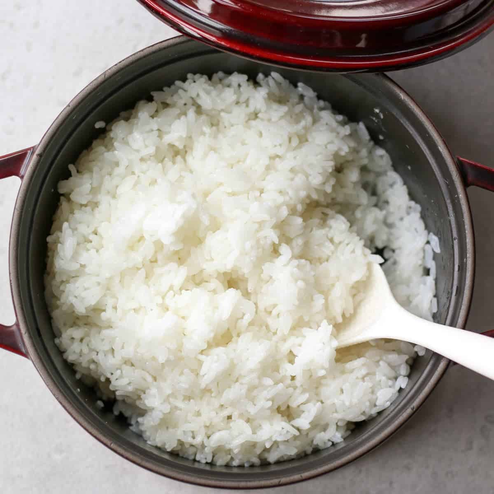

Rice

Description
Rice is a delicious, staple in many cultures around the world and has seemingly endless possibilties with the combinations in which it can be enjoyed. When prepared correctly, you can expect to have a nice comforting meal however you may choose to eat it.
Ingredients:
- Your favorite type of rice!
- Metal pot or rice cooker
- Running water
Steps:
Wash the Rice
Many times, people forget to wash their rice, assuming that it is ready to cook and eat as it is. However, when properly washed, one can see that it is normally surrounded by impurities that can affect the taste and quality of the rice. When washing it, make sure to follow these steps to ensure you cook a clean batch of rice that is pleasant to eat!
- Measure out how many cups of rice you would like to cook. Sometimes, the bag of rice has guidelines on proper serving sizes. Add the rice to your metal pot or rice cooker pot.
- Place the rice under cold, running water until it is completely submerged. Toss and turn your rice with your washed hands, making sure to get it thoroughly cleaned. You may notice the water getting murky immediately. This is all the starch and impurities getting washed out.
- Very carefully, drain the water from the pot, making sure rice does not fall out.
- Once the dirty water is drained, repeat the steps above until the water starts to turn out clear in the pot. Clear water indicates clean rice!
Measuring the Water
There are many different ways people figure out how much water they need to cook their rice. I will teach you how to do it using a method my mother taught me.
- Add a bit of water to your pot of cleaned rice until it is just submerged.
- Level out the rice by shaking the pot a bit. Make sure it is evenly spread out in the pot.
- Take your clean middle finger, and submerge it into the pot until it touches the bottom of the pot.
- Take your thumb, and place it as a marker on your middle finger to where the top of the rice reaches it.
- After you placed your thumb on your middle finger as a marker, take out your middle finger (with your thumb still on it) and place it on top of the rice in the pot. The amount of water you need in the pot should reach up to the thumb marker you placed on your middle finger. This is how you know how much water you need to cook your rice.
Cooking the Rice
- After filling your pot with water, either place it on the stove or back in your rice cooker.
- If you have a rice cooker, you should be able to pick the setting that it has according to the amount of rice you are cooking.
- If you are cooking on a stove, let the rice cook over medium heat for about 30-40 minutes, or until it looks fully cooked.
- Once the rice is finished, it should look like a nice, fluffy bed that is evenly distributed. There should not be any excess water and the rice should be nice and moist.
- Make sure to get a spoon or rice paddy and "fluff" up the rice by tossing and turning it over in the pot. This will make sure that it does not stick to the sides of the pot and it will be easier to take out.